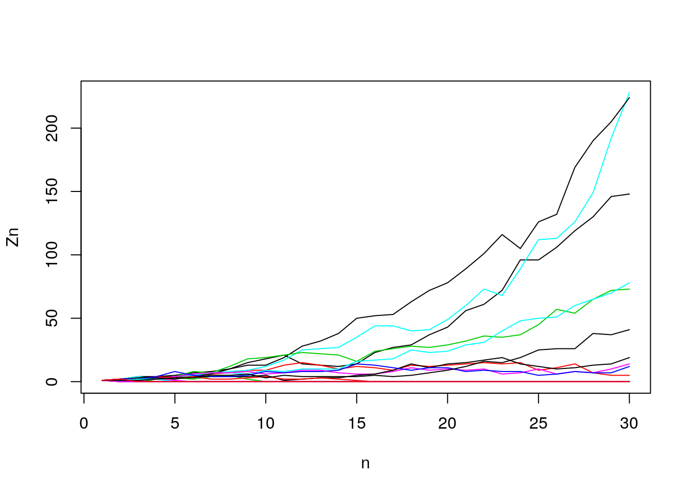
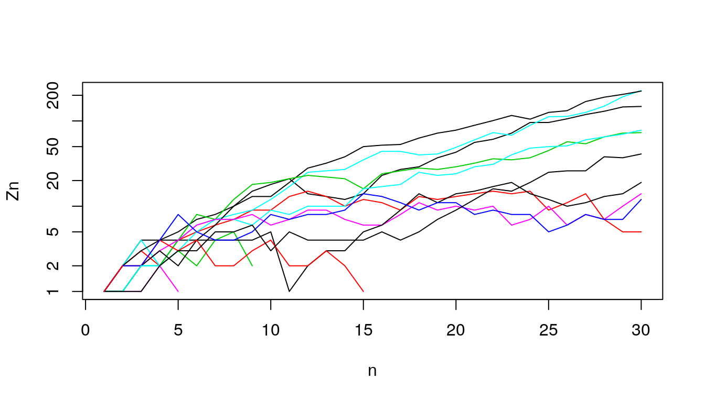
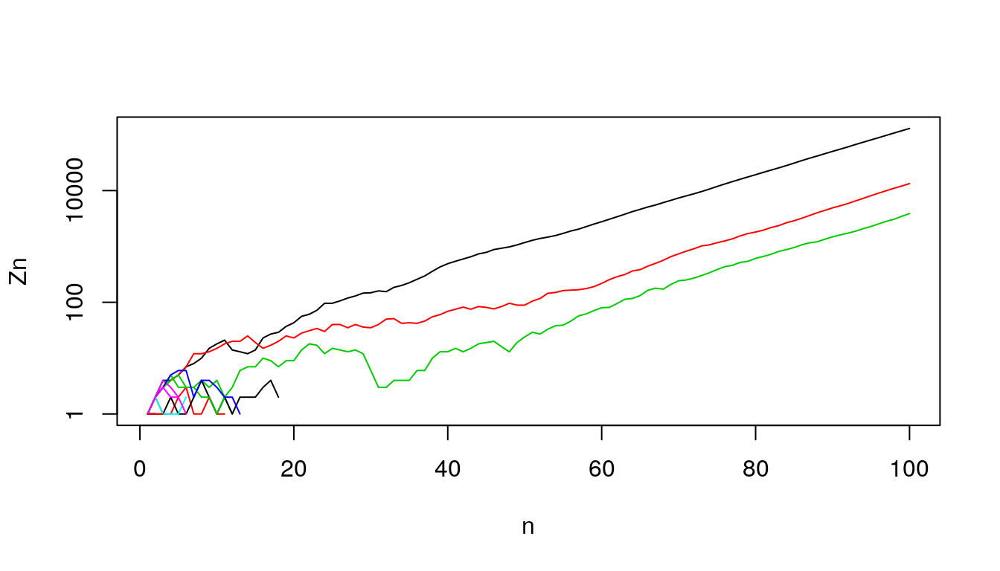
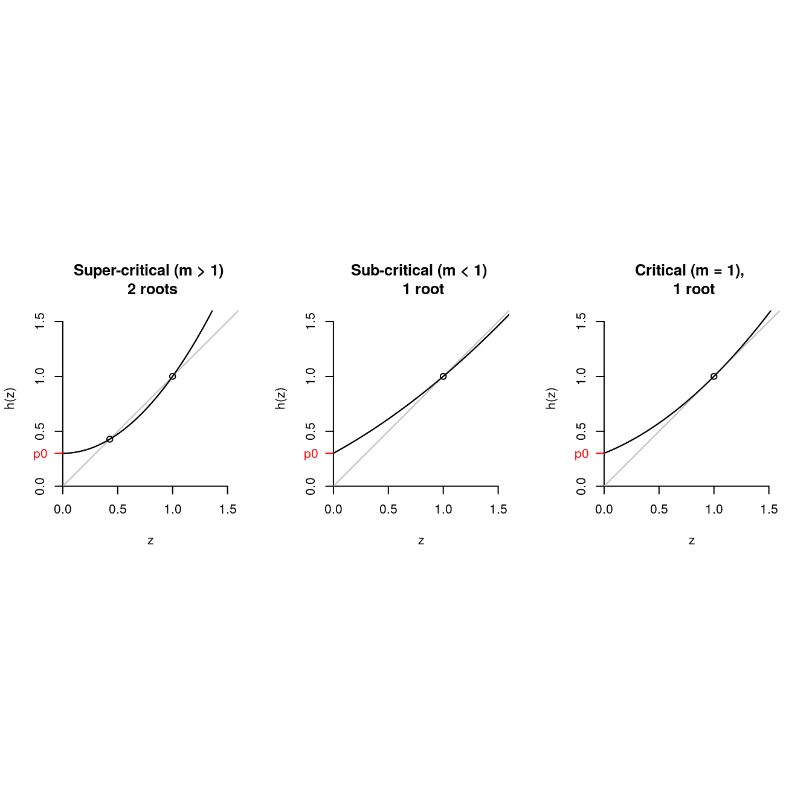
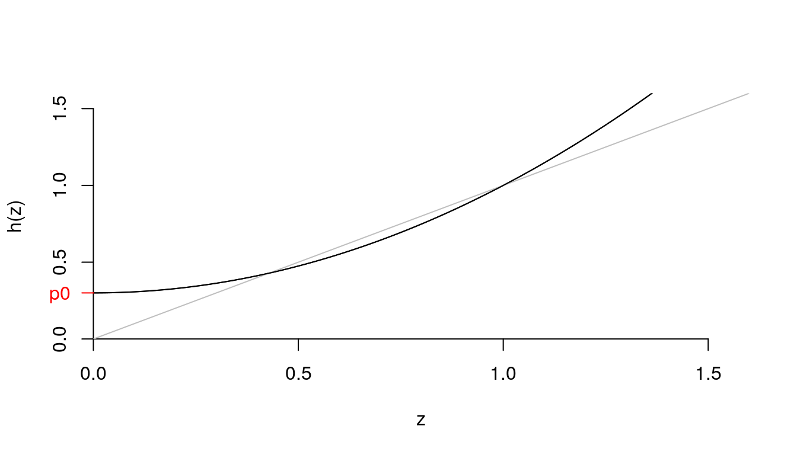
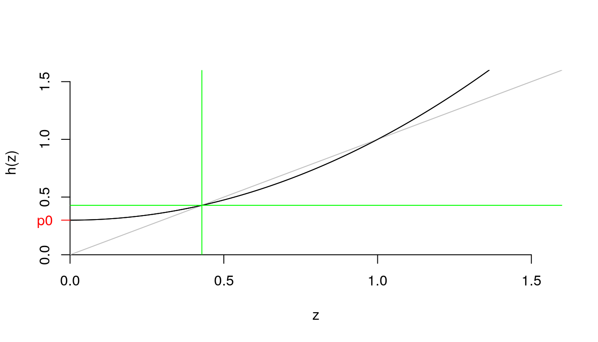
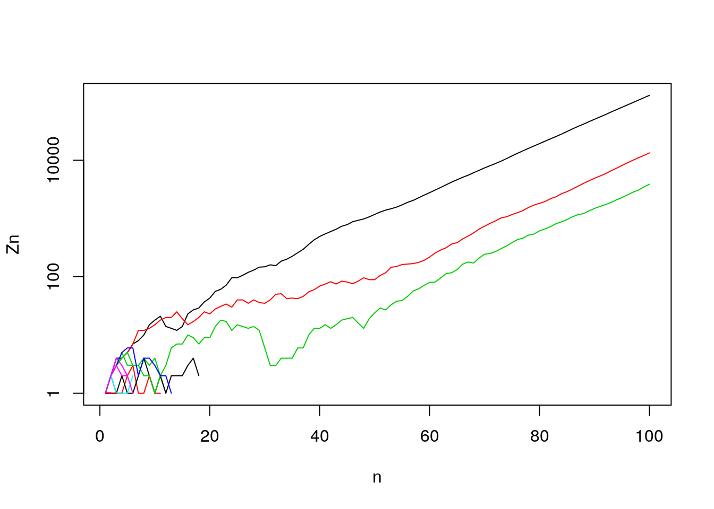

Chapter 8 Branching Processes
8.1 Outline
- The Galton-Watson-Bienaym'e Process
- A viral example, simulating a branching process, our questionsThe distribution of the 2nd generation
- Moment generating functions
- Extinction probabilities
- The distribution of offspring of all generations
- A tractable offspring distribution
8.2 Motivation
- Until now, we’ve focused on the hidden structures of heterogeneity.
- Now, we’re switching gears:
- Stochastic not deterministic
- In small populations, randomness matters. (Even when risks are homogeneous.)
- branching processes (“parents producing children”), next Fisher-Wright (“children choosing parents”), and then historical reconstruction from contemporary diversity (“coalescent”).
8.2.1 Very brief history of Branching Processes
- Bienayme’s lost notes
- Galton and Watson’s (extinction of families) old motivation: to see if elites were dying out because of “degeneration”
- Genetics (survival of a mutant)
- contemporary motivation: evolution and neutral genetic change. what is the chance that a mutant will survive?
- The bomb (chain reactions)
- war-time motivation: to see how to build the bomb
- Anywhere “incipient dynamics” matter.
- sociological: will all of S. Korea be “Kim”?
- can we get variance of repro success from name disn?
- it will give us a headstart on other (less realistic but easier) “drift” models.
8.3 Simulated examples and the questions they raise
8.4 What is a (Bienaym'e-)Galton-Watson branching process?
- \(p_k\): Each individual in each generation reproduces independently, following same offspring distribution, with \(p_k\) as the probability of having \(k\) offspring.
- \(Z_n\): The si\(Z\)e of the \(n\)’th generation \(Z_n\). (\(Z_1 \equiv 1\))
- \(p_0 > 0\): Some non-zero probability of no children.
- Variance: None of the \(p_k\) are 1
Some questions

Galton’s original question
- What is the chance \(d\) of eventual extinction (no “outbreak”)?
- Or, what is the distribution of surviving family sizes?
- What are the aggregate properties of many branching processes? (Mean growth, variance, time-paths, eventual size)?
8.5 Simulations
k = 0:2
p0 = .3; p1 = .3; p2 = .4;
p_k = c(p0, p1, p2)
Z1 = 1
set.seed(9)
(kids.of.Z1 = sample(x = k, size = Z1, replace = T, prob = p_k))## [1] 2## [1] 2## [1] 2 2## [1] 4## [1] 2 1 2 2## [1] 7Let’s draw the tree.
/
//
// /
#A function
branch <- function(n_max = 30, pk = c(p0, p1, p2), Z1 = 1)
{
Z.vec <- rep(NA, n_max)
Z.vec[1] <- Z1
for (i in 1:(n_max-1))
{
Z.vec[i+1] <- sum(sample(x = k,
size = Z.vec[i],
replace = T,
prob = p_k))
}
return(Z.vec)
}
set.seed(19); branch()## [1] 1 2 2 4 5 2 2 3 2 0 0 0 0 0 0 0 0 0 0 0 0 0 0 0 0 0 0 0 0 0## [1] 1 1 2 1 1 0 0 0 0 0 0 0 0 0 0 0 0 0 0 0 0 0 0 0 0 0 0 0 0 0Let’s see what happens with 20 trials (up to 30 generations)
n_trials = 20; n_gen = 30
Z.mat <- matrix(NA, n_trials, n_gen)
set.seed(131)
for (i in 1:n_trials)
Z.mat[i,] <- branch(n_max = n_gen)
matplot(t(Z.mat),
type = "l", lty = 1, ylab = "Zn", xlab = "n")
How many survive (out of 20)?
log-scale

surviving = ifelse(Z.mat[,n_gen] == 0, "extinct", "survive")
foo <- prop.table(table(surviving))
print( prop.table(table(surviving)) )## surviving
## extinct survive
## 0.5 0.5How would you discribe the time path of the surviving lines?
Long term
n_trials = 20; n_gen = 100
Z.mat <- matrix(NA, n_trials, n_gen)
set.seed(131)
for (i in 1:n_trials)
Z.mat[i,] <- branch(n_max = n_gen)
suppressWarnings(matplot(t(Z.mat), log = "y", type = "l", lty = 1, ylab = "Zn", xlab = "n"))
What does this remind you of? (Hint: “Leslie”). (See Harris figure)
8.6 “Extinction” vs “breakout”
- We see that in a super-critical (\(m > 1\)) branching process, if a line can survive a few generations and reach a large enough size, it will grow exponentially.
- What happens if \(m < 1\), if \(m = 1\)? Discuss.
8.6.1 The Probability Generating Function: Our mathematical tool
\[ h(z) = p_0 + p_1 z + p_2 z^2 + \ldots \]
The PGF “keeps book” on the probabilities. The chance of \(k\) is the coefficient on \(z^k\).
-$h(0) = $ -$h(1) = $ -$h’(1) = $
The story of two brothers
A father has two sons. The probability generating function of their children combined is:
\[ [h(z)]^2 = (p_0 + p_1 z + p_2 z^2) \times (p_0 + p_1 z + p_2 z^2) \]
Multiply out, and tell me the coefficients on $z^0, z^1, $.
What is the probability generating function for the distribution of grandsons?
- A man has two sons, with probability \(p_2\), so PGF in that case is $ p_2 [h(z)]^2 $.
But let’s sum over all possible numbers of sons.
\[ p_0 + p_1 h(z) + p_2 [h(z)]^2 + p_3 [h(z)]^3 + \ldots \]
Which is? (Hint: write a new argument for PGF) \[ h(h(z)) \]
Can show PGF for the n’th generation is \[ h(h(h ... \mbox{$n$ times} h(z))) = h_n(z) \]
exercise: write out \(h_2(z) = h(h(z))\) for \[ h(z) = p_0 + p_1 z + p_2 z^2. \]}
Extinction -“Extinction is forever.”: So, the probability \(d_n\) of extinction {} generation \(n\) can never decline over time. (Must it always rise?)
Recursive extinction -Is non-extinction “forever”?: If \(\lim_{n \rightarrow \infty} = d(\infty) < 1\), then this says there’s a chance \(1 - d(\infty)\) of eternal persistence. We’ll try to figure out more about what this means.
If the probability of a female line going extinct in \(n\) generations is \(d_n\), then this is equivalent to her daughter(s) line(s) going extinct in \(n-1\) generations. With \(p_k\) chance of having \(k\) daughters, we have \[ d_n = p_0 + p_1 d_{n-1} + \mbox{What is next term in series?} \]
What can we do with \[ d_n = h(d_{n-1})? \]
Well, remember that \(d_n\) is non-decreasing, and that it’s maximum can be no greater than \(1.0\). When \(d_n\) reaches it’s limit, say \(d\), we won’t need generational subscripts, \(d\) will be constant, and will obey \[ d = h(d) \]
Thus, an amazing result: the probability of ultimate extinction is when the argument equals the PGF of the argument.
Can \(d = 1\), can \(d < 1\)
- Try \(d = 1\). What happens?
- If we were to find a solution less than 1.0, how would we interpret that?
Three cases
par(mfrow = c(1,3), pty = "s")
z = seq(0, 1.6, .01)
pk = c(.3, .0, .7); names(pk) <- 0:2
d <- pk["0"]
for (i in 1:10)
{
d <- pk["0"] + pk["1"]*d + pk["2"]*d^2
}
## super-critical
hz = pk["0"] + pk["1"]*z + pk["2"]*z^2
plot.fun <- function(z, hz)
{
plot(z, hz, type = "l", ylim = c(0,1.6),
ylab = "h(z)",
yaxs = "i", xaxs = "i", axes = F)
axis(1, at = seq(0, 1.5, .5))
axis(2, at = seq(0, 1.5, .5))
abline(0,1, col = "grey")
lines(z, hz)
axis(2, at = pk["0"], labels = "p0",
col.axis = "red", col = "red",
lwd = 1, las = 2)
}
plot.fun(z,hz)
points(c(d, 1),c(d, 1))
title("Super-critical (m > 1) \n 2 roots")
## sub-critical
pk = c(.3, .55, .15); names(pk) <- 0:2
hz = pk["0"] + pk["1"]*z + pk["2"]*z^2
plot.fun(z,hz)
title("Sub-critical (m < 1) \n 1 root")
points(1,1)
## critical
pk = c(.3, .4, .3); names(pk) <- 0:2
hz = pk["0"] + pk["1"]*z + pk["2"]*z^2
plot.fun(z, hz)
title("Critical (m = 1), \n 1 root")
points(1,1)
We can prove by answering: What is \(h'(1)\)? What is \(h(0)\)? Is \(h''(z) > 0\)?
pk = c(.3, .0, .7); names(pk) <- 0:2
z = seq(0, 1.6, .01)
hz = pk["0"] + pk["1"]*z + pk["2"]*z^2
plot.fun(z,hz)
Where is \(h(p_0)\), \(h(h(p_0))\), \(h(h(h(p_0)))\), \(\ldots\)?
So how do we actually get \(d\)?
Take the case where \(p_0 = .3\), \(p_1 = 0\), and \(p_3 = .7\) (the one I just plotted).
- Can do some algebra
- Or we can recursively iterate on the computer.
Numerical recursion
pk = c(.3, .0, .7); names(pk) <- 0:2 ## our example
d <- pk["0"] # initial value
for (i in 1:20)
{
d <- pk["0"] + pk["1"]*d + pk["2"]*d^2
if (i %in% c(1,2,19,20))
print(paste(i, d))
}## [1] "1 0.363"
## [1] "2 0.3922383"
## [1] "19 0.428565882081349"
## [1] "20 0.428568100698915"Did we get the right value?
pk = c(.3, .0, .7); names(pk) <- 0:2
z = seq(0, 1.6, .01)
hz = pk["0"] + pk["1"]*z + pk["2"]*z^2
plot.fun(z,hz)
abline(h = d, col = "green")
abline(v = d, col = "green")
Extinction and non-extinction revisited
- If \(m > 1\), there exists \(d\) bigger than 0 and less than unity.
- This means there’s some positive chance of extinction.
- But also some chance of never-extinction. (What form does never-extinction take?)

Relevance to Corona virus?
8.7 Good and bad set-ups for branching process
Good
Unrestricted growth (frontier, new disease, start of a reaction)
A “null” model for understanding how apparent structure is just random outcomes. Families that die out didn’t have to have low \(NRR\). Just because most new viruses don’t break out, doesn’t mean they aren’t potentially dangerous (\(R_0 >> 1.0\)).
- A model that corresponds our mental model of running a generative process forward. (cf. Fisher-Wright)
Bad
When offspring of 1 depends on offspring of other (e.g., brothers inheriting a farm)
When resource constraints slow growth rates (e.g., Malthus: fertility of next gen depends on fertility of last; SIR model in disease spread)
Analysis. PGF is powerful but still we often have to deal with listing all possibilities.
- Big populations – law of large numbers means randomness doesn’t matter.
\begin{frame}fragile{Our set-up (note: code is revised slightly)}
<<echo = T, size = “small”>>= branch <- function(n_max = 30, p_k = c(p0, p1, p2), Z1 = 1) { ## note: this returns 0s when extinct k <- 0:(length(p_k)-1) Z.vec <- rep(NA, n_max) Z.vec[1] <- Z1 for (i in 1:(n_max-1)) { Z.vec[i+1] <- sum(sample(x = k, size = Z.vec[i], replace = T, prob = p_k)) } return(Z.vec) } p0 = .3; p1 = .4; p2 = .3 ## what is m? @ \end{frame}
\begin{frame}fragile{1000 trials, code} <<echo = T, eval = F>>= n_trials = 1000; n_gen = 100 Z.mat <- matrix(NA, n_trials, n_gen) set.seed(131) for (i in 1:n_trials) Z.mat[i,] <- branch(n_max = n_gen) matplot(t(Z.mat), type = “l”, lty = 1, ylab = “Zn”, xlab = “n”) @ \end{frame}
\begin{frame}fragile{1000 trials, picture} <<echo = F, eval = T, fig.height = 5>>= n_trials = 1000; n_gen = 100 Z.mat <- matrix(NA, n_trials, n_gen) set.seed(131) for (i in 1:n_trials) Z.mat[i,] <- branch(n_max = n_gen) matplot(t(Z.mat), type = “l”, lty = 1, ylab = “Zn”, xlab = “n”) @ \end{frame}
\begin{frame}fragile{1000 trials, means}
<<echo = T, eval = F>>= Zn_bar = apply(Z.mat, 2, mean) n <- 1:ncol(Z.mat) proportion.zero <- function(x){prop.table(table(x == 0))[“TRUE”]} d_n = apply(Z.mat, 2, proportion.zero) Z.mat.na <- Z.mat; Z.mat.na[Z.mat == 0] <- NA Zn_surv_bar = apply(Z.mat.na, 2, mean, na.rm = T) par(mfrow = c(1,3)) plot(n, Zn_bar, main = “Mean Zn”) plot(n, d_n, main = “Fraction extinct”) plot(n, Zn_surv_bar) ## insert code here for Zn_surv_bar.hat and add a line @ \end{frame}
\begin{frame}fragile{1000 trials, means, picture}
<<echo = F, eval = T, fig.height = 5>>= Zn_bar = apply(Z.mat, 2, mean) n <- 1:ncol(Z.mat) proportion.zero <- function(x){prop.table(table(x == 0))[“TRUE”]} d_n = apply(Z.mat, 2, proportion.zero) Z.mat.na <- Z.mat; Z.mat.na[Z.mat == 0] <- NA Zn_surv_bar = apply(Z.mat.na, 2, mean, na.rm = T) par(mfrow = c(1,3)) plot(n, Zn_bar, main = “Mean Zn”) plot(n, d_n, main = “Fraction extinct”) plot(n, Zn_surv_bar) ## insert code here for Zn_surv_bar.hat and add a line @ \end{frame}
\begin{frame}fragile{Variance in our simulation} <<fig.height = 5>>= var_Zn = apply(Z.mat, 2, var) n <- 1:ncol(Z.mat) plot(n, var_Zn) @ \end{frame}
% \begin{frame}fragile{Distribution of \(Z_n\)} % <<fig.height = 5>>= % Z20 <- table(table(Z.mat[,20])) % Z5 <- table(table(Z.mat[,5])) % par(mfrow = c(2,2)) % plot(Z20[Z20 < 100]) % plot(log(Z20[Z20 < 100])) % plot(Z5[Z5 < 100]) % plot(log(Z5[Z5 < 100])) % @
% \end{frame}
\begin{frame}fragile{A picture, Lotka’s parameters for 1920}
<<fig.height = 4>>= b = 0.2126 ; c = 0.5893 kk = 1:10 ; p_kk = b * c^(kk-1) p0 = b/(1-c) k = c(0, kk) ; p_k = c(p0, p_kk) plot(k, p_k) @ \end{frame}
\begin{frame}fragile{A plot of Keyfitz’s numbers for generations 1, 2, and 3. Is it exponential for \(k > 0\)?} <<eval = F, echo = T, size = “tiny”>>= ## b = 0.2126 ; c = 0.5893 ## lotka b = 0.3666; c = .5533 ## Keyfitz (from GS) m = b / (1-c)^2 ## [1] 1.260416 d = (1 - b - c) / (c * (1-c)) #[1] 0.8185088 par(mfrow = c(1,1)) for (i in 1:3) { n = i p0_n = d * (m^n - 1)/ (m^n -d) j = kk pj_n = m^n ((1-d) / (m^n - d))^2 ((m^n - 1)/(m^n - d))^(j-1) pk_n <- c(p0_n, pj_n) if (i == 1) plot(k, pk_n, type = “l”, log = "") if (i > 1) lines(k, pk_n, col = i) } @
\end{frame}
\begin{frame}fragile{log scale} <<eval = T, echo = F, fig.height = 5>>= ## b = 0.2126 ; c = 0.5893 ## lotka b = 0.3666; c = .5533 ## Keyfitz (from G&S) m = b / (1-c)^2 ## [1] 1.260416 d = (1 - b - c) / (c * (1-c)) #[1] 0.8185088 par(mfrow = c(1,1)) for (i in 1:3) { n = i print(n) p0_n = d * (m^n - 1)/ (m^n -d) j = kk pj_n = m^n * ((1-d) / (m^n - d))^2 * ((m^n - 1)/(m^n - d))^(j-1) pk_n <- c(p0_n, pj_n) if (i == 1) plot(k, pk_n, type = “l”, log = “y”) if (i > 1) lines(k, pk_n, col = i) } @ \end{frame}
%% \begin{frame}{Let’s switch to R}
% Our goal will be to see if distributions look geometric, or not.
% \end{frame}
\end{document}